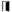
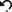

GeneCommittee Team
SING Group
- PhD. Miguel Reboiro-Jato
- PhD. Florentino Fdez-Riverola
- PhD. Daniel Glez-Peña
- Hugo López-Fernández
Bioinformatics@UA
- PhD. José Luis Oliveira
- PhD. Joel Arrais
Attributions
Community and User symbols by Thomas Weber,
Door  symbol by Tak Imoto,
Undo  symbol by P.J. Onori
and other icons from The Noun Project collection.